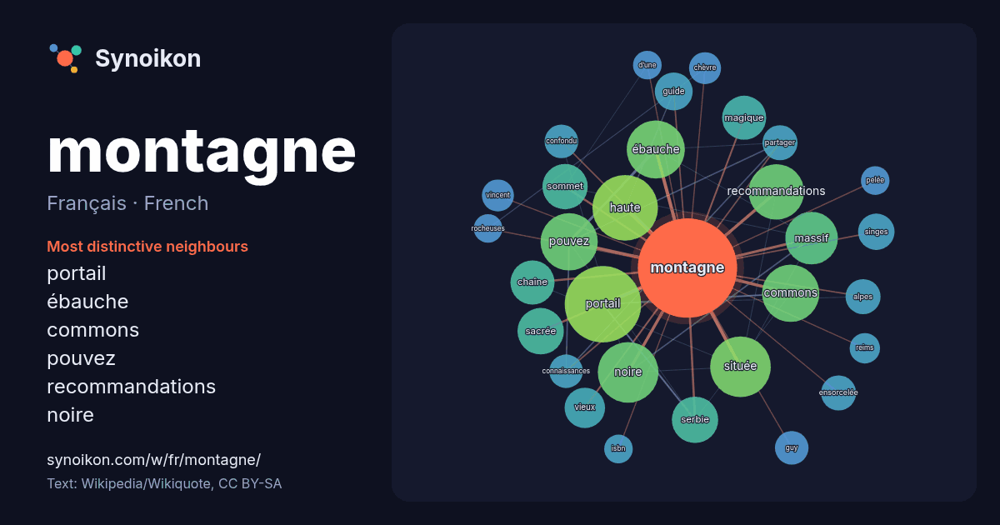

Français · French · word of the day list
montagne
“mountain” · The words found around it in 1290 instances from French Wikipedia, Wikiquote.

Most distinctive neighbours
- portail 52×
- ébauche 34×
- commons 33×
- pouvez 33×
- recommandations 30×
- noire 27×
- haute 26×
- massif 21×
- sacrée 20×
- magique 19×
- serbie 19×
- sommet 15×
- singes 14×
- vieux 14×
- guide 14×
- ensorcelée 13×
- chaîne 13×
- partager 12×
- située 12×
- confondu 12×
× = how many times more often than in general French Wikipedia text.
Most frequent neighbours
- portail 57
- haute 42
- français 36
- noire 36
- située 36
- ébauche 33
- commons 32
- pouvez 32
- recommandations 30
- massif 27
- nom 26
- commune 22
- région 22
- france 21
- sacrée 21
- serbie 21
- liste 20
- sommet 20
- chaîne 19
- magique 19
In context
- article » labellisé en 2018. Pour les articles homonymes, voir Montagne (homonymie). Une montagne (Écouter) est une forme topographique de relief positif, à Wikipedia snippets · Montagne
- nom de famille. Montagné est un nom de famille notamment porté par : Gilbert Montagné (né en 1951), chanteur français ; Guy Montagné (né en 1948), humoriste Wikipedia snippets · Montagné
- Pour les articles homonymes, voir Montagné. Gilbert Montagné Prononciation Gilbert Montagné Écouter, né le 28 décembre 1951 dans le 20e arrondissement Wikipedia snippets · Gilbert Montagné
- sources sont attendues ? Comment ajouter mes sources ? Guy Montagné Guy Montagné en 2016. Guy Montagné, né le 6 mars 1948 à Paris 14e, est un acteur et un humoriste Wikipedia snippets · Guy Montagné
- avec La Loi de la montagne. La loi du 9 janvier 1985 relative au développement et à la protection de la montagne, dite « loi montagne », constitue en France Wikipedia snippets · Loi montagne
- Pour les articles homonymes, voir Montagne (homonymie). Vincent Montagne Vincent Montagne est un éditeur, dirigeant d'entreprise français, PDG de Média-Participations Wikipedia snippets · Vincent Montagne
- bourbonnaise. Par rapport au Mayet-de-Montagne, ancien chef-lieu du canton et principale localité de la Montagne bourbonnaise, à vol d'oiseau, Vichy se Wikipedia snippets · Montagne bourbonnaise
- projets Wikimedia : La Montagne, sur le Wiktionnaire La Montagne, sur Wikisource Ne doit pas être confondu avec Lamontagne ou Montagne. Cette page contient Wikipedia snippets · La Montagne
More French words
- art
- automne
- carte
- chanson
- chat
- chemin
- cheval
- chien
- climat
- cloche
- cœur
- dieu
- désert
- eau
- famille
- forêt
- histoire
- hiver
- horloge
- jardin
- langue
- miel
- miroir
- monnaie
- mort
- mère
- nature
- nourriture
- ombre
- pain
- pluie
- pont
- pouvoir
- printemps
- santé
- science
- sel
- silence
- temps
- tempête
- thé
- train
- travail
- trésor
- vie
- ville
- vérité
- étoile
- île
Precomputed on 2026-10-09 with default settings (±5 words, medium corpus). The interactive map can refresh it with live data.